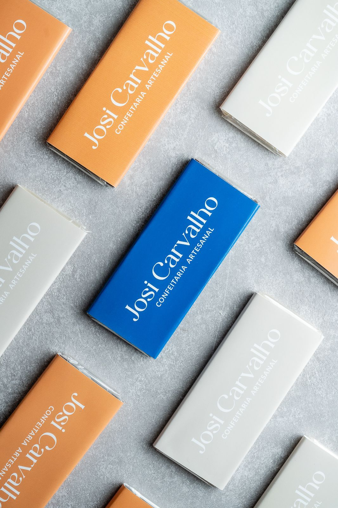
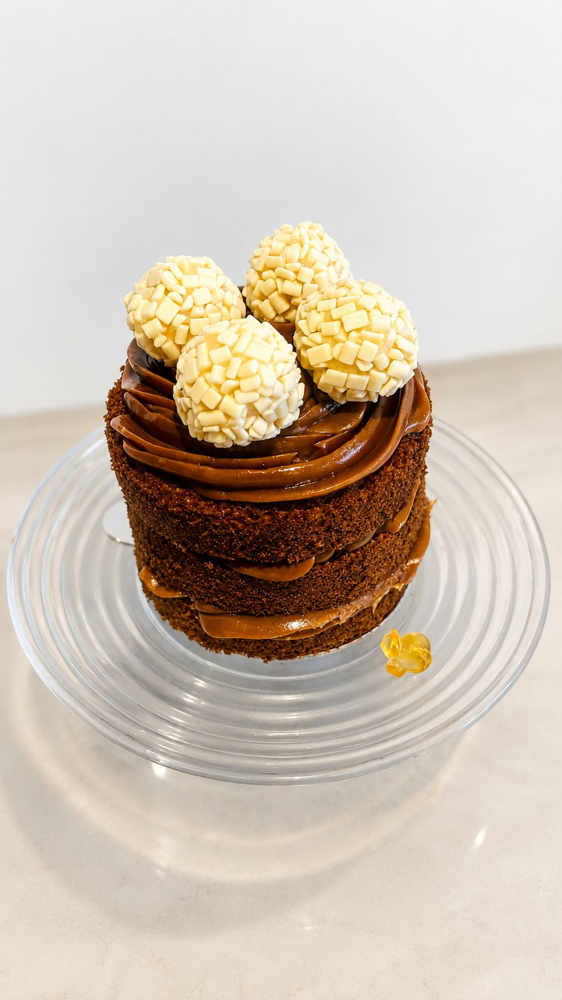
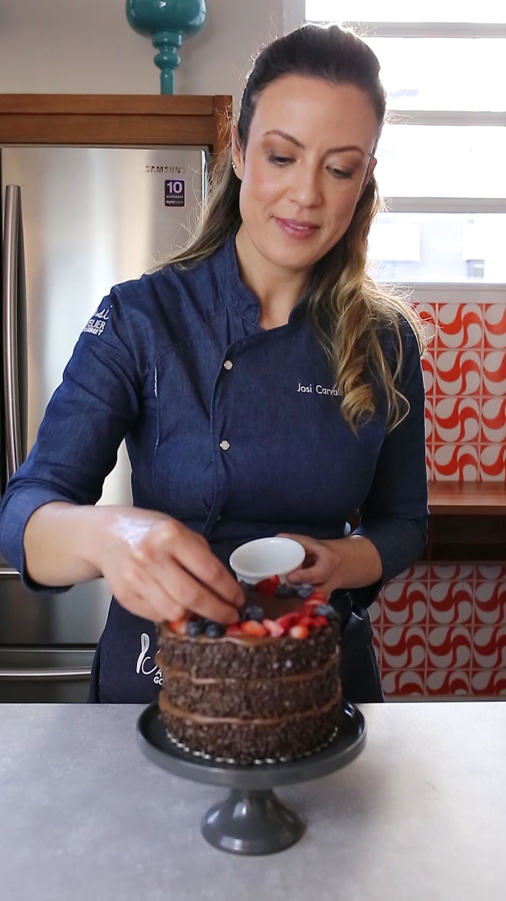
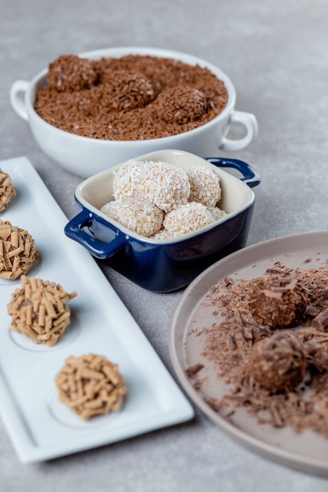

Confeitaria Artesanal · Santa Cecília · Desde 2014
Doces, bolos e sobremesas artesanais em Santa Cecília
Adoçando a vida desde 2014. Na Josi Carvalho, cada doce é feito à mão, com carinho e capricho — para adoçar o seu dia.

- Confeitaria artesanal desde 2014
- Atendimento pelo WhatsApp
- Também no iFood
Destaques
O que você encontra na Josi Carvalho
Feito à mão
Doces, bolos e sobremesas artesanais, preparados com atenção a cada detalhe.
Desde 2014
Mais de uma década adoçando a vida de quem passa por Santa Cecília.

Atendimento pelo WhatsApp
Tire dúvidas e consulte o cardápio direto com a equipe.
Na loja ou em casa
Visite a confeitaria ou peça para receber em casa pelo iFood.
Sobre
Sobre a Josi Carvalho
A Josi Carvalho Confeitaria Artesanal nasceu em 2014 com um propósito simples: adoçar a vida das pessoas. À frente da confeitaria está a Josi, que prepara doces, bolos e sobremesas artesanais com carinho e capricho. Em Santa Cecília, São Paulo, a casa recebe quem quer um doce feito com cuidado — para o café da tarde, para presentear ou para matar aquela vontade.

Adoçando a vida desde 2014.
Pedidos
Na loja ou em casa
Passe na Josi Carvalho, na Rua Francisco Estácio Fortes, para escolher o seu doce, ou chame no WhatsApp para tirar dúvidas e consultar o cardápio. Para receber em casa, a Josi Carvalho também está no iFood.
- Entrega própria, encomendas e pagamento
- Consulte pelo WhatsApp
Chame no WhatsApp ou ligue para (11) 91109-6907, ou peça pelo iFood.
Conte o que você procura — doces, bolos ou sobremesas.
Combine os detalhes com a equipe.

Contato
Onde estamos
Endereço
R. Francisco Estácio Fortes, 136
Santa Cecília, São Paulo - SP, 01233-060
Fale com a gente
- WhatsApp: (11) 91109-6907
- Telefone: (11) 91109-6907
- Instagram: @josiconfeitariartesanal
- Pedidos on-line: iFood
4,9 no Google · 211 avaliações
Conte como foi o seu doce
Já provou a Josi Carvalho? Sua avaliação no Google ajuda outras pessoas a nos conhecer e nos ajuda a adoçar cada vez mais vidas.
Avaliar no GoogleBateu a vontade de um doce?
Doces, bolos e sobremesas artesanais, em Santa Cecília. Venha nos visitar ou fale com a Josi Carvalho pelo WhatsApp.